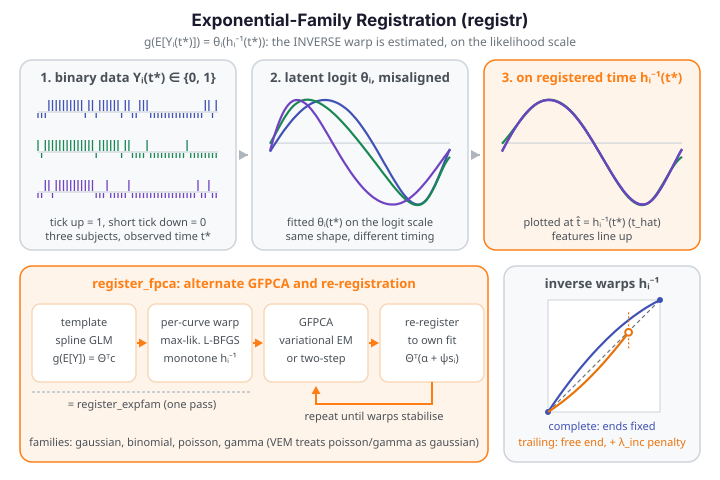

Non-Gaussian Registration¶
Accelerometers record whether a person is active minute by minute (0/1). Neurons fire counts per time bin. Disease registries record yes/no states per visit. These are functional data with binary, count or positive-skewed values, and they have phase variability like any other: people get up at different times, trials start with different latencies. Aligning them with SRSF or least-squares methods does not work well: the raw values are discrete, derivatives are meaningless, and smoothing them first to "proportions" or \(\log\) counts throws information away and distorts the timing near 0 and 1.
register_fpca registers such curves on the likelihood scale. It is a port of the R package registr (Wrobel et al. 2019; Wrobel & Bauer 2021): each curve's time axis is warped so that its observations are most likely under an exponential-family model whose mean is a smooth template, and the template itself is a generalised functional principal component (GFPCA) model estimated jointly. It also handles irregular grids and curves cut off at the start or the end.

Binary curves registered on the logit scale by estimating inverse warps \(h_i^{-1}\).
The model¶
For curve \(i\) observed at times \(t^*_{ij}\),
with
- \(g\) the canonical link of the chosen
family:"gaussian"(identity),"binomial"(logit; values in \([0, 1]\)),"poisson"(log; values \(\ge 0\)),"gamma"(log; values \(> 0\), per-curve scale); - \(\Theta\) a cubic B-spline basis of size
kt(default 8), \(\alpha\) the population mean coefficients, \(\psi\) the FPC coefficients and \(s_i \sim N(0, I)\) the subject scores (npccomponents, default 1); - \(h_i^{-1}\) the inverse warp: it maps the observed ("chronological") time \(t^*\) to the registered ("template") time. It is a monotone cubic B-spline with
khcoefficients (default 4) on the curve's own observed range, with inner knots at quantiles of its time points.
This method estimates the inverse warp
Most aligners return a warp \(h_i\) with registered curve \(x_i(h_i(t))\). register_fpca returns \(\hat t_{ij} = h_i^{-1}(t^*_{ij})\) (registration["t_hat"], one array per curve): the registered time at which each observation sits. To plot registered data, plot \(Y_{ij}\) against \(\hat t_{ij}\) (or use registered_argvals / registered_values). evaluate_inverse_warp(hinv_beta[i], hinv_inner_knots[i], t_lo, t_hi, t) evaluates \(h_i^{-1}\) anywhere on the curve's range.
The algorithm¶
register_fpca alternates registration and GFPCA:
- Template. A spline GLM \(g(\mathbb{E}[Y]) = \Theta^\top c\) is fitted to all observations pooled (iteratively reweighted least squares). The time range of
template(default: the data) must equal the data's. - Registration (
register_expfamis this step alone). For every curve, the coefficients of \(h_i^{-1}\) maximise the curve's log-likelihood under the template. registr does this with a log-barrierconstrOptim; fdars reparametrises the coefficients through a softmax of increments (so every candidate is strictly monotone) and uses L-BFGS with analytic gradients for all four families. Losses are therefore at most R's, and warps are strictly monotone. - GFPCA of the registered data (see below).
- Re-registration. Every curve is re-registered to its own fitted curve \(\Theta^\top(\alpha + \psi\,\hat s_i)\), warm-started from the previous warp. This separates amplitude (the score \(s_i\)) from phase: a curve that is simply more active is not warped to look like the mean.
- Repeat 3–4 until the mean squared change of \(\hat t / t_{\max}\) is at most \(10^{-4}\), or for
max_iterations(default 10), then run a final GFPCA.
Two GFPCA engines¶
fpca_type |
Method | Families | Cost |
|---|---|---|---|
"variational_em" (default) |
registr bfpca / fpca_gauss: EM with the Jaakkola–Jordan variational bound for binary data (one variational parameter per observation), exact EM for Gaussian data |
likelihood-based for gaussian and binomial only; poisson and gamma data are treated as gaussian on the data scale, as in R | fast |
"two_step" |
registr gfpca_twoStep (Gertheiss et al. 2017): (1) smooth covariance on the latent scale (Hall, Müller & Yao 2008: P-spline GLM mean, tensor-spline smooth of the off-diagonal cross-products, delta-method transform, near-PD projection); (2) eigen-decomposition; (3) scores and mean from a GLMM fitted natively (REML for gaussian, Laplace otherwise) |
family-specific for all four families | much slower |
Prefer "two_step" for Poisson and gamma data when the GFPCA itself matters; for registration alone the variational EM is usually enough (see the example below). npc_var_explained (and npc_min_component_share) choose the number of components by explained variance, registr's npc_criterion.
Registering binary and count curves¶
Thirty curves are generated from a common latent template \(\theta\) evaluated at a known inverse warp, \(Y_i(t^*) \sim \text{Bernoulli}\bigl(\operatorname{logit}^{-1}\theta(h_i^{-1}(t^*))\bigr)\), and likewise with Poisson counts and a log link. The table compares the recovered inverse warps with the truth (mean absolute error after removing the common part, \(\times 10^{-3}\)), for register_fpca and for the usual workaround: smooth each curve, transform it to the logit or log scale, and align with the elastic Karcher mean.
import numpy as np
from fdars import alignment as A
def simulate(family, m, rng, n=30):
t = np.linspace(0, 1, m)
theta = (lambda s: 3 * np.sin(2 * np.pi * s) - 0.5) if family == "binomial" else \
(lambda s: 1.5 * np.sin(2 * np.pi * s) + 0.5)
Y, Hinv = [], []
for _ in range(n):
hinv = t + rng.uniform(-0.6, 0.6) * t * (1 - t) # true inverse warp
eta = theta(hinv)
Y.append(rng.binomial(1, 1 / (1 + np.exp(-eta))) if family == "binomial" else rng.poisson(np.exp(eta)))
Hinv.append(hinv)
return t, np.array(Y, float), np.array(Hinv)
rng = np.random.default_rng(0)
print("family m register_fpca smooth + elastic no registration")
for family in ("binomial", "poisson"):
for m in (100, 200):
t, Y, Hinv = simulate(family, m, rng)
err = lambda T: 1000 * np.abs((T - T.mean(0)) - (Hinv - Hinv.mean(0))).mean()
r = A.register_fpca_regular(Y, t, family=family)
T = np.array([np.asarray(x) for x in r["registration"]["t_hat"]])
K = np.exp(-0.5 * ((t[:, None] - t[None, :]) / 0.06) ** 2) # Gaussian kernel smoother
S = Y @ (K / K.sum(1, keepdims=True)).T
S = np.log((S + 0.02) / (1.02 - S)) if family == "binomial" else np.log(S + 0.5)
G = np.asarray(A.karcher_mean(S, t)["gammas"])
Te = np.array([np.interp(t, g, t) for g in G]) # elastic warp -> inverse warp
print(f"{family:9s} {m:4d} {err(T):13.1f} {err(Te):16.1f} {err(np.tile(t, (len(Y), 1))):15.1f}")
print("FDARS_FENCE_OK")
family m register_fpca smooth + elastic no registration
binomial 100 23.6 33.2 45.5
binomial 200 19.9 25.7 44.5
poisson 100 16.4 20.8 39.1
poisson 200 10.8 17.4 47.8
FDARS_FENCE_OK
register_fpca recovers the warps best in every setting, with 20–40 % lower error than the smoothing workaround. With more observations per curve both approaches improve. (The elastic warp \(\gamma_i\) registers \(x_i(\gamma_i(t))\), so its inverse is the comparable quantity.)
Variational EM or two-step?¶
Count curves whose level also varies between subjects (a random intercept on the log scale, recovered as the first GFPCA score):
import time
import numpy as np
from docs_fig import fast
from fdars import alignment as A
rng = np.random.default_rng(5)
n, m = 30, 100
t = np.linspace(0, 1, m)
Y, Hinv, level = [], [], []
for _ in range(n):
hinv = t + rng.uniform(-0.6, 0.6) * t * (1 - t)
s = rng.normal(0, 0.5) # subject-level amplitude
Y.append(rng.poisson(np.exp(1.5 * np.sin(2 * np.pi * hinv) + 0.5 + s)))
Hinv.append(hinv)
level.append(s)
Y, Hinv, level = np.array(Y, float), np.array(Hinv), np.array(level)
for fpca_type in fast(("variational_em", "two_step"), ("variational_em",)):
t0 = time.perf_counter()
r = A.register_fpca_regular(Y, t, family="poisson", fpca_type=fpca_type, npc=1)
T = np.array([np.asarray(x) for x in r["registration"]["t_hat"]])
err = 1000 * np.abs((T - T.mean(0)) - (Hinv - Hinv.mean(0))).mean()
score = np.asarray(r["fpca"]["scores"])[:, 0]
print(f"{fpca_type:15s} GFPCA family {r['fpca']['em_family']:8s} warp error {err:5.1f}"
f" |corr(score, level)| {abs(np.corrcoef(score, level)[0, 1]):.3f}"
f" ({time.perf_counter() - t0:.1f} s)")
print("FDARS_FENCE_OK")
variational_em GFPCA family gaussian warp error 34.5 |corr(score, level)| 0.954 (0.1 s)
two_step GFPCA family poisson warp error 33.0 |corr(score, level)| 0.980 (15.3 s)
FDARS_FENCE_OK
Both engines recover the subject levels (correlation above 0.95) and similar warps. The variational EM reports em_family = "gaussian": it modelled the counts as Gaussian on the data scale. The two-step fit is Poisson-specific and slightly more accurate here, at more than a hundred times the run time. (In local DOCS_FAST builds only the variational EM runs.)
Incomplete curves¶
A curve can stop before the process it records has finished (a recording that ends early), or start late. With incompleteness="trailing", "leading" or "full" the corresponding end(s) of \(h_i^{-1}\) are free: the curve's last observation does not have to map to the end of the template. Free ends are weakly identified, so the negative log-likelihood is penalised by \(n_i \cdot \lambda_{\text{inc}} \cdot \text{pen}\), where pen is the squared offset of the free end from the diagonal (or the squared difference in span for "full"), as in registr's loss_h. Incompleteness is not available with warping="piecewise_linear2".
import numpy as np
from fdars import alignment as A
from fdars.pace_fpca import irreg_fdata_from_lists
rng = np.random.default_rng(0)
n, m = 30, 150
t = np.linspace(0, 1, m)
times, values, true_hinv = [], [], []
for _ in range(n):
hinv = t + rng.uniform(-0.5, 0.5) * t * (1 - t)
y = rng.poisson(np.exp(1.5 * np.sin(2 * np.pi * hinv) + 0.5)).astype(float)
end = rng.integers(int(0.6 * m), m) # recording stops between 60% and 100%
times.append(t[:end]); values.append(y[:end]); true_hinv.append(hinv[:end])
data = irreg_fdata_from_lists(times, values)
print("incompleteness lambda_inc warp error end-point error (x 1e-3)")
for inc, lam in [(None, 0.0), ("trailing", 0.0), ("trailing", 1.0), ("trailing", 10.0)]:
r = A.register_fpca(data, family="poisson", incompleteness=inc, lambda_inc=lam)
T = [np.asarray(x) for x in r["registration"]["t_hat"]]
warp = 1000 * np.mean([np.abs(a - h).mean() for a, h in zip(T, true_hinv)])
end = 1000 * np.mean([abs(a[-1] - h[-1]) for a, h in zip(T, true_hinv)])
print(f"{str(inc):14s} {lam:10.1f} {warp:10.1f} {end:15.1f}")
print("FDARS_FENCE_OK")
incompleteness lambda_inc warp error end-point error (x 1e-3)
None 0.0 17.2 35.9
trailing 0.0 23.1 60.8
trailing 1.0 17.4 28.6
trailing 10.0 17.1 31.8
FDARS_FENCE_OK
Two lessons:
- A free end needs a penalty. With \(\lambda_{\text{inc}} = 0\) the free end chases noise and the warps get worse than pretending the curves were complete.
- With a moderate penalty (\(\lambda_{\text{inc}} \approx 1\)) the end points are estimated better than under the complete-curve assumption, while the overall warp error stays the same. The gain is modest here because the true inverse warps do not move the end far from the diagonal; it grows when curves stop at very different stages of the process.
Treat \(\lambda_{\text{inc}}\) as a tuning parameter: try a few values on a log scale and inspect where the free ends land.
Piecewise-linear warps with priors¶
warping="piecewise_linear2" replaces the B-spline by registr's two-knot polygon \((0,0) \to (x_1,y_1) \to (x_2,y_2) \to (1,1)\) on each curve's range scaled to \([0,1]\), with \(x_1 \ge 0.1\), \(x_2 - x_1 \ge 0.1\), \(x_2 \le 0.9\) (and the same for \(y\)). The binary likelihood is multimodal in these four numbers, so the optimiser adds a coarse grid start and a Nelder–Mead polish. For binomial data, prior_sd puts normal priors on the knots (means 0.25, 0.25, 0.75, 0.75). With this warping, t_hat is on the scaled domain. Use it when you want an interpretable, low-dimensional warp ("the morning came 40 minutes later").
Parameters¶
| Parameter | Default | Effect |
|---|---|---|
family |
"gaussian" |
"binomial", "poisson", "gamma" |
kh |
4 | B-spline size of the inverse warp (≥ 4); more = more flexible warps |
warping |
"nonparametric" |
or "piecewise_linear2" |
prior_sd |
None |
knot prior (binomial + piecewise_linear2 only) |
incompleteness, lambda_inc |
None, 0 |
free ends and their penalty |
max_iterations |
10 | registration ⇄ GFPCA rounds |
warp_max_iter, warp_tol, gamma_scale_init |
500, 1e-12, 1.5 | per-curve optimiser |
fpca_type |
"variational_em" |
or "two_step" |
npc, kt |
1, 8 | GFPCA components and spline size (kt is also the template size) |
npc_var_explained, npc_min_component_share |
None |
choose npc by explained variance |
fpca_max_iter, error_thresh, seed |
50, 1e-4, 1988 | EM controls; psi_init, xi_init fix the random start |
periodic |
False |
periodic B-spline bases |
Entry points:
register_fpca(data, template=None, ...)for an irregular data object fromfdars.pace_fpca.irreg_fdata_from_lists(times, values);register_fpca_regular(data, argvals, ...)for a dense \((n, m)\) matrix.register_expfam(data, ...): one registration pass to the population template, without GFPCA.gfpca_variational(data, family, ...),gfpca_two_step(data, family, ...): GFPCA alone, without registration.
Results: registration (t_hat, hinv_beta, hinv_inner_knots, curve_loss, loss, template_knots, template_coefs, per-curve converged), fpca (mean, efunctions, evalues, scores, fitted, em_family, ...), registered_data (an irregular data object), registered_argvals, registered_values, iterations, converged, registration_loss.
Reproducing R
The random initialisation of the EM uses a different generator from R, so results agree with registr only up to the EM tolerance; pass psi_init / xi_init to fix the start. registr's subsampling of more than \(10^7\) rows is not ported.
When to use it¶
- Use it for binary, count or positive-skewed curves with phase variability; for irregular grids; for curves that stop early or start late; when you want the GFPCA of the registered data in the same step.
- Prefer elastic or continuous registration for dense, roughly Gaussian curves: with
family="gaussian"this model works, but the elastic and Ramsay–Li methods give metrics, amplitude/phase decompositions and smoother warp classes. - Check the warps. With few observations per curve or a nearly flat template, the likelihood carries little information about timing; inspect
t_hatagainst the observed times.
See also¶
- Sparse & Irregular Curves — elastic analysis of irregularly sampled real-valued curves and trajectories.
- PACE FPCA — FPCA of sparse Gaussian curves.
- Functional GLM — binary and count responses with functional predictors.
- Choosing an Alignment Method.
References¶
- Wrobel, J., Zipunnikov, V., Schrack, J., Goldsmith, J. (2019). Registration for exponential family functional data. Biometrics 75(1), 48–57.
- Wrobel, J., Bauer, A. (2021). registr 2.0: Incomplete curve registration for exponential family functional data. Journal of Open Source Software 6(61), 2964.
- Gertheiss, J., Goldsmith, J., Staicu, A.-M. (2017). A note on modeling sparse exponential-family functional response curves. Computational Statistics & Data Analysis 105, 46–52.
- Hall, P., Müller, H.-G., Yao, F. (2008). Modelling sparse generalized longitudinal observations with latent Gaussian processes. Journal of the Royal Statistical Society, Series B 70(4), 703–723.
- Jaakkola, T. S., Jordan, M. I. (1997). A variational approach to Bayesian logistic regression models and their extensions. Proceedings of the Sixth International Workshop on Artificial Intelligence and Statistics, PMLR R1, 283–294.